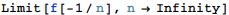

東京大学 2015年 理科 第6問
問題
nを正の整数とする。以下の問いに答えよ。
(1) 関数g(x)を次のように定める。
f(x)を連続な関数とし、p,qを実数とする。をみたすxに対してp≤f(x)≤qが成り立つとき、次の不等式を示せ。
(2) 関数h(x)を次のように定める。
このとき、次の極限を求めよ。
解答
(1)
を計算すると、
また、においてp≤f(x)≤qだから、

となり、題意は示された。
(2)
In[135]:=

Out[135]=
| \[Piecewise] |
|
だから、g'(x)=h(x)

また、においてh(n x)=0だから、部分積分を行って
ここでとすると、
In[137]:=
In[140]:=
Out[140]=

だから、においてf(x)は単調増加であり、従って
(1)の結果から、
In[142]:=

Out[142]=
In[143]:=
Out[143]=

だから、はさみうちの原理により、
したがって求める答えは
補足・感想
抽象的な関数の性質を扱う問題はMathematicaでは扱いにくく、ほとんど手計算となってしまった。